<!doctype html>
<html lang="ja">
  <meta charset="utf-8">
  <meta name="viewport" content="width=device-width,initial-scale=1">
  <title>小H · キャラクター</title>
  <style>
    * { box-sizing: border-box; }
    body { margin: 0; background: #142d3c; color: #edf9f6; font-family: system-ui, sans-serif; }
    main { max-width: 960px; margin: auto; padding: 28px 20px; }
    h1 { margin-bottom: 8px; }
    p { color: #b9d9df; line-height: 1.7; }
    a { color: #74e4cd; }
    .forms { display: grid; grid-template-columns: repeat(2, minmax(0, 1fr)); gap: 20px; margin: 28px 0; }
    figure { margin: 0; border: 1px solid #557080; border-radius: 24px; overflow: hidden; }
    .image { background: linear-gradient(135deg, #344d5e, #12202d); padding: 18px; }
    img { display: block; width: 100%; height: auto; }
    figcaption { padding: 18px; font-weight: 700; }
    small { display: block; color: #b9d9df; margin-top: 6px; font-weight: 400; }
    @media (max-width: 600px) { .forms { grid-template-columns: 1fr; } }
  </style>
  <main>
    <a href="./">ゲームへ戻る</a>
    <h1>小H</h1>
    <p>ふたつの姿（すがた）で、時間（じかん）の旅（たび）へ。</p>
    <div class="forms">
      <figure>
        <div class="image"></div>
        <figcaption>ORIGINAL<small>はじまりと、おわりの姿</small></figcaption>
      </figure>
      <figure>
        <div class="image"></div>
        <figcaption>TIME TRAVELER<small>四季（しき）をめぐる、旅の姿</small></figcaption>
      </figure>
    </div>
    <p>キャラクターの見た目を並べたページです。ゲームでは、この画像を3D空間の中に表示します。</p>
    <p><a href="./?preview=1&amp;debug=1">小Hの動きをプレビューで見る</a></p>
  </main>
</html>
